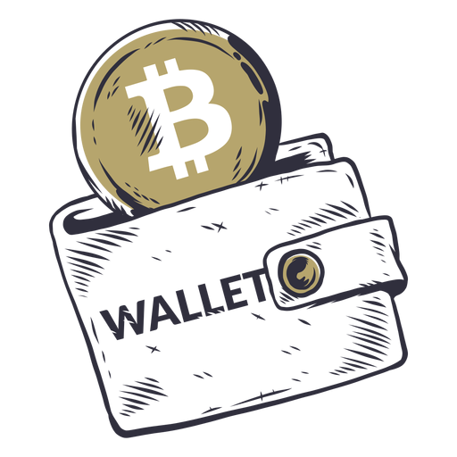
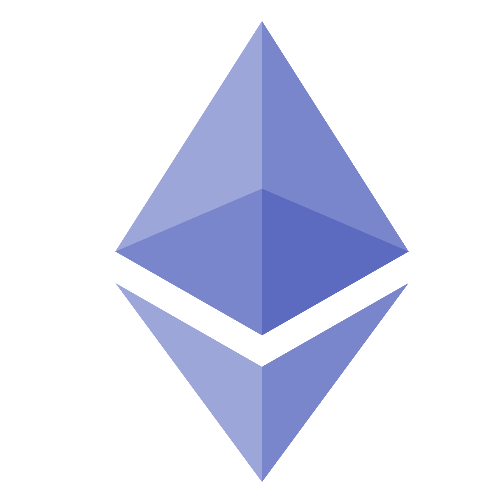

MetaMask is a software cryptocurrency wallet used to interact with the Ethereum blockchain. It allows users to access their Ethereum wallet through a browser extension or mobile app, which can then be used to interact with decentralized applications
Step 1: Click here to install MetaMask on your device, then pin it on the extensions bar.
Step 2: Create your account and change the network to Ropsten (default is Mainnet).
Step 4: Reload website, click Connect MetaMask and enjoy.
About This DAPP ( Decentralized Applications )
INITIAL COIN OFFERING ( ICO )
- ICO is an acronym that means Initial Coin Offering, which is how funds are raised for a new cryptocurrency offering. It's similar to an IPO (Initial Public Offering) which raises funds when a new company ventures onto the stock market.
- In this Website I have created an ICO for my LEKO token with a value of 0.0001 ETH ( approx 0.3$ ) per $LEKO. With these $LEKOs you can later set your username, create your own ERC20 Token, play lottery or buy some NFTs... Buy, Hold strong and never sell !!! (Not a financial advice)

YIELD FARMING
- Yield farming, also referred to as liquidity mining, is a way to generate rewards with cryptocurrency holdings. In simple terms, it means locking up cryptocurrencies and getting rewards ( like open a saving acount in a bank, but with higher interest ).
- In this Website, I have created a Token farming system where you can earn $LEKO when staking Ethereum, this is just a fun project so I have set the APY ( Annual Percentage Yield ) to freaking 525.6%, that's mean you can get 10 $LEKO with each Ether you are Staking per minute.
Have Fun !!!
CREATE YOUR OWN ERC 20 TOKEN
- An ERC20 token is a blockchain-based asset with similar functionality to bitcoin, ether, and bitcoin cash: it can hold value and be sent and received. ERC20 tokens are stored and sent using ethereum addresses and transactions, and use gas to cover transaction fees.
- By clicking CREATE, the system will automatically create an ERC20 token for you and all the supply will be deposited to your address. Because everything in this website is deployed on Ropsten testnet, a Blockchain network used for testing so your token won't have any value, however you can still send, recieve or see any other accounts' balance of your token.

DECENTRALIZED BETTING SYSTEM
- This betting system is also written by smart contracts and deployed on the Ropsten testnet ethereum blockchain. Here you can play bet with cryptocurrency as much as you want, don't need to trust anyone except for the blockchain.
- Choose your amount and the win chance you want to bet, the pay out value will be amount x 100 / win chance. Enjoy and know when to stop.
- Whenever you lose, just double the amount.
NON FUNGIBLE TOKEN ( NFT )
- A non-fungible token (NFT) is a unit of data stored on a digital ledger, called a blockchain, that certifies a digital asset to be unique and therefore not interchangeable. NFTs can be used to represent items such as photos, videos, audio, and other types of digital files. Access to any copy of the original file, however, is not restricted to the buyer of the NFT. While copies of these digital items are available for anyone to obtain, NFTs are tracked on blockchains to provide the owner with a proof of ownership that is separate from copyright.
- This website allow users to create their own NFT which last forever on a distributed network, you can also sell your NFT on market and buy others' NFT too.